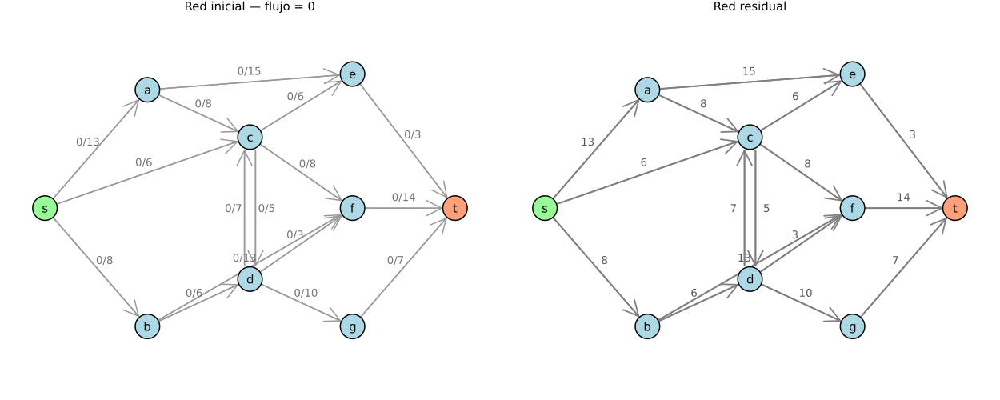
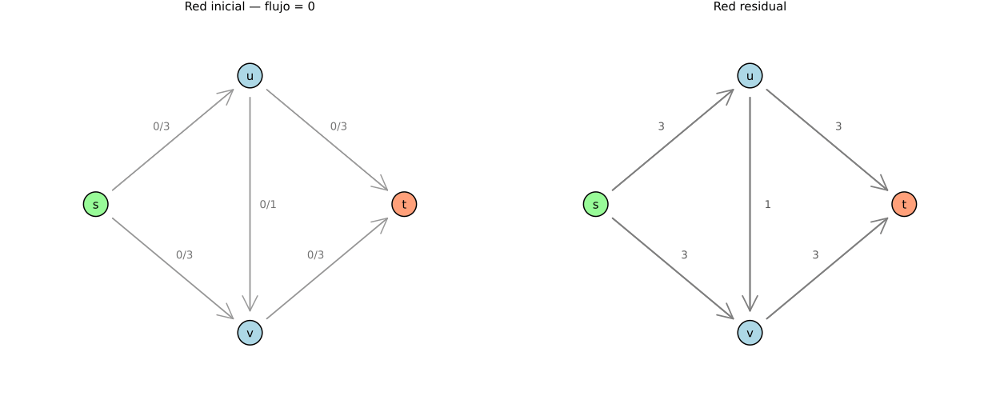
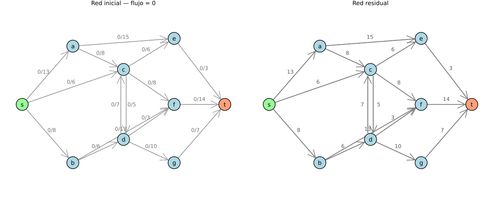

▸ propia_ek.gif · Edmonds-Karp con onda BFS5 iteraciones

A la izquierda la red de flujo; a la derecha la onda BFS creciendo capa por capa con la distancia d anotada bajo cada nodo. El camino resaltado siempre tiene d(t) arcos.
▸ zigzag_adversario.gif · el peor caso en vivoM=3 · 6 iteraciones

El adversario alterna los dos caminos que cruzan la trampa. Cada par de iteraciones mueve 2 unidades. Con BFS, la misma red se resuelve en 2 iteraciones.
▸ propia_ff_dfs.gif · Ford-Fulkerson con DFS8 iteraciones

La misma red que arriba, resuelta con DFS: 3 iteraciones más para el mismo flujo de 24. A la derecha, la red residual — en rojo punteado los arcos de retroceso disponibles.
▸ Cómo leer estas animaciones
Naranja = camino aumentante ·
púrpura = aristas del corte mínimo ·
azul = arcos con flujo ·
dorado = nodos de S.
En el panel derecho,
rojo punteado son los
arcos de retroceso: la capacidad de cancelar flujo ya enviado. Van en sentido contrario a los arcos que llevan flujo.
El último fotograma muestra el
corte mínimo con S en dorado — su capacidad coincide con el flujo máximo.
▸ Los siete GIF del entregable
propia_ff_bfs · propia_ff_dfs · propia_ek
zigzag_adversario · zigzag_bfs
clrs_bfs · clrs_dfs